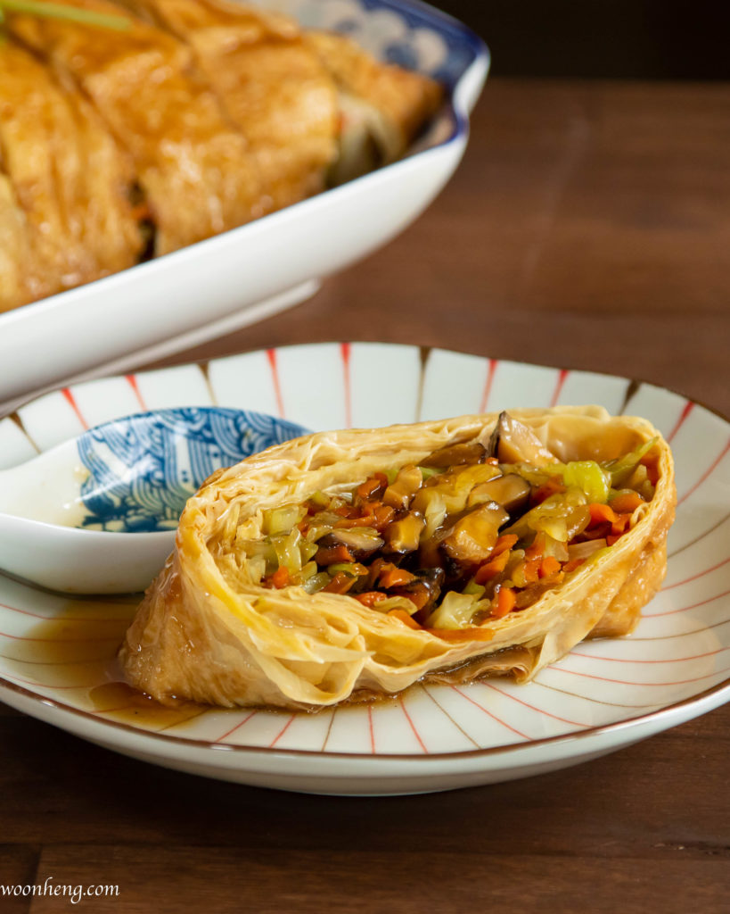

Yuba or fu pei guen is a traditional Chinese dim sum snack consisting of tofu skin rolls. The wrappers are made from tofu skin and they’re packed with crunchy vegetables or meat, then braised in a savory broth. Although there are variations, yube is often filled with ingredients such as cabbage, shiitake mushrooms, carrots, shrimp, chicken, bean sprouts, leeks, or celery. The vegetables are seasoned with a mixture of soy sauce, sugar, white pepper, and sesame oil. The broth and sauce for braising usually consists of water or stock, soy sauce, ginger, sugar, cinnamon, and star anise. When served, tofu skin rolls are often garnished with chopped scallions, while the sauce can be served in the same plate or on the side for dipping.
Meal prep time : 30 minutes
Servings : 4